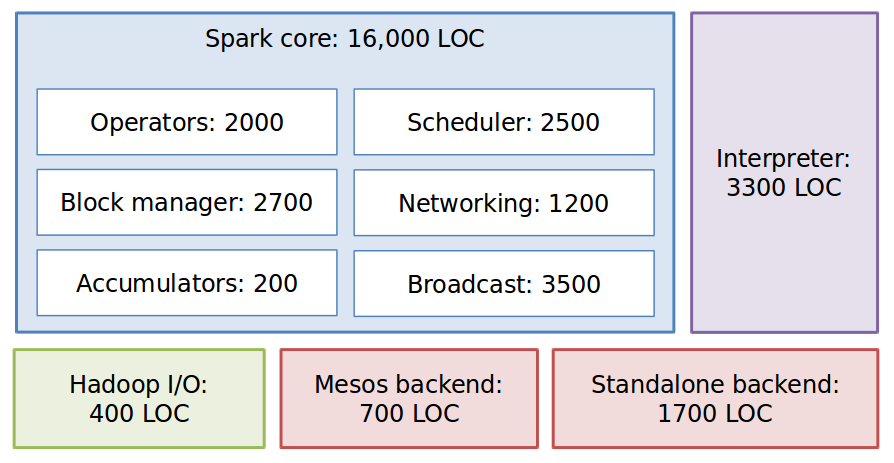
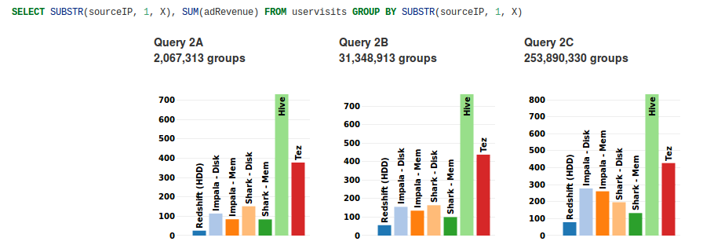
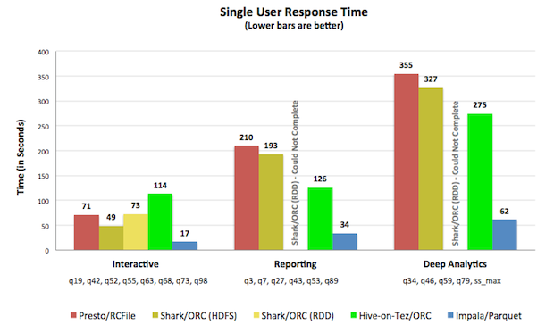

Spark
A framework for distributed computation
Presentation at UniCredit
Comparison with Hadoop
Spark
MapReduce + Cascading
+ Scalding (Pig)
Comparison with Hadoop
Spark
MapReduce + Cascading
+ Scalding (Pig)
Spark Streaming Storm
Comparison with Hadoop
Spark
MapReduce + Cascading
+ Scalding (Pig)
Spark Streaming Storm
Spark SQL Impala (Hive)
Comparison with Hadoop
Spark
MapReduce + Cascading
+ Scalding (Pig)
Spark Streaming Storm
Spark SQL Impala (Hive)
GraphX Giraph
Comparison with Hadoop
Spark
MapReduce + Cascading
+ Scalding (Pig)
Spark Streaming Storm
Spark SQL Impala (Hive)
GraphX Giraph
MLLib Mahout
Comparison with Hadoop
Spark
MapReduce + Cascading
+ Scalding (Pig)
Spark Streaming Storm
Spark SQL Impala (Hive)
GraphX Giraph
MLLib Mahout
Spark JobServer ???
Key difference
All of these are API compatible
RDD
The underlying abstraction is a
dataset
RDD
The underlying abstraction is a
distributed dataset
RDD
The underlying abstraction is a
resilient distributed dataset
RDD interface
- Set of partitions ("splits")
- List of dependencies on parent RDDs
- Function to compute a partition given parents
- Preferred locations (optional)
- Partitioner (optional)
Hadoop RDD
- Set of partitions = 1 per HDFS block
- Dependencies = none
- Function to compute a partition = read block
- Preferred locations = HDFS block location
Filtered RDD
- Set of partitions = same as parent
- Dependencies = parent
- Function to compute a partition = filter the parent
- Preferred locations = none
Graph RDDs

What they got right
Built on Scala and Akka


What they got right
- Built on Scala and Akka
- Simplicity
What they got right
- Built on Scala and Akka
- Simplicity
- First focus on getting the semantics right
What they got right
- Built on Scala and Akka
- Simplicity
- First focus on getting the semantics right
- Reifying the RDD (common interface)
What they got right
- Built on Scala and Akka
- Simplicity
- First focus on getting the semantics right
- Reifying the RDD (common interface)
- Laziness
What they got right
- Built on Scala and Akka
- Simplicity
- First focus on getting the semantics right
- Reifying the RDD (common interface)
- Laziness
- Orthogonal to resource management
Codebase size
Simplicity
Speed comes as a consequence
Run by yourself the benchmark
Caveat
The opposite is also true :-?
Language support
Available for
- Scala
- Java
- Python
Python
counts = file.flatMap(lambda line: line.split(" ")) \
.map(lambda word: (word, 1)) \
.reduceByKey(lambda a, b: a + b)
Java
JavaRDD<String> words = file.flatMap(new FlatMapFunction<String, String>() {
public Iterable<String> call(String s) { return Arrays.asList(s.split(" ")); }
});
JavaPairRDD<String, Integer> pairs = words.map(new PairFunction<String, String, Integer>() {
public Tuple2<String, Integer> call(String s) { return new Tuple2<String, Integer>(s, 1); }
});
JavaPairRDD<String, Integer> counts = pairs.reduceByKey(new Function2<Integer, Integer>() {
public Integer call(Integer a, Integer b) { return a + b; }
});
(if you really want)
...and Clojure too :-)
(ns com.fire.kingdom.flambit
(:require [flambo.api :as f]))
;; NOTE: we are using the flambo.api/fn not clojure.core/fn
(-> (f/text-file sc "data.txt") ;; returns an unrealized lazy dataset
(f/map (f/fn [s] (count s))) ;; returns RDD array of length of lines
(f/reduce (f/fn [x y] (+ x y)))) ;; returns a value, should be 1406
See Flambo.